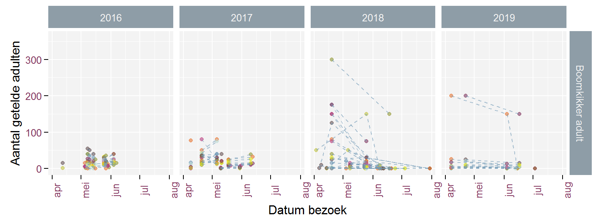
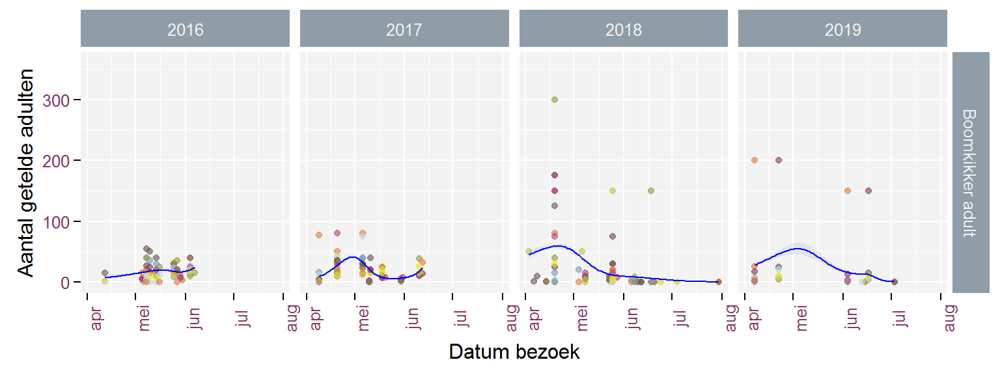
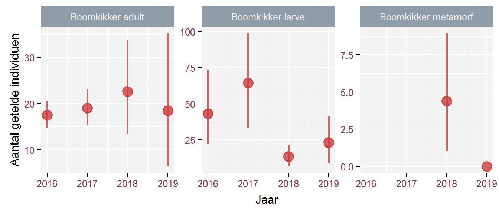

3 Resultaten van de dataverkenning
3.1 Overzichtstabellen
Op basis van deze gegevens maken we volgende overzichtstabellen:
3.2 Figuren
Daarnaast vind je op deze website per meetnet een aantal figuren met de getelde aantallen per bezoek. Een
Een eerste figuur geeft de evolutie van de getelde aantallen binnen het seizoen weer en dit voor elk jaar waarin er geteld werd. Onderstaand voorbeeld toont het getelde aantal Boomkikker adulten. De stippelijnen verbinden tellingen van eenzelfde locatie. Op basis hiervan krijg je een idee hoe de getelde aantallen binnen een telseizoen variëren.

Indien er veel tellocaties zijn, is het moeilijk om nog een patroon te herkennen in bovenstaande figuur. Daarom tonen we ook onderstaande figuur waarin de blauwe lijn de gemiddelde evolutie toont binnen het telseizoen en de grijze banden aan beide kanten van de blauwe lijn de onzekerheid aangeven op deze gemiddelde evolutie. Een dergelijke figuur vraagt een minimum aantal telgegevens en daarom is het niet mogelijk om deze figuur voor alle soorten te maken.

Ten slotte tonen we ook een figuur met het gemiddeld aantal getelde individuen per jaar (rode bollen) en het 95%-betrouwbaarheidsinterval hierop (rode verticale strepen). Op basis hiervan kunnen de gemiddelde aantallen tussen verschillende jaren vergeleken worden. Indien de betrouwbaarheidsintervallen van verschillende jaren niet overlappen, kunnen we vrij zeker zijn dat er werkelijk een verschil is in populatiegrootte.
